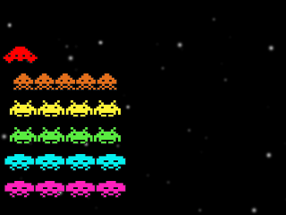
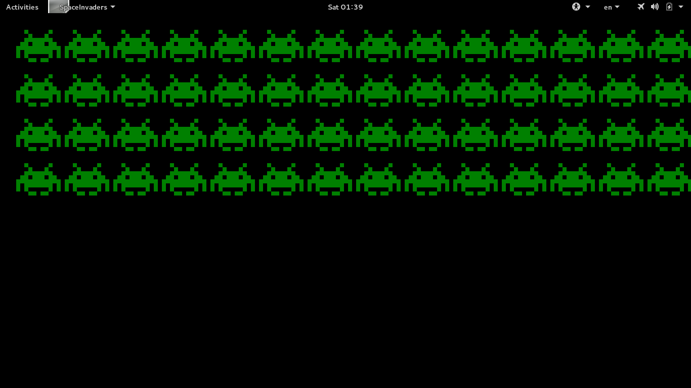
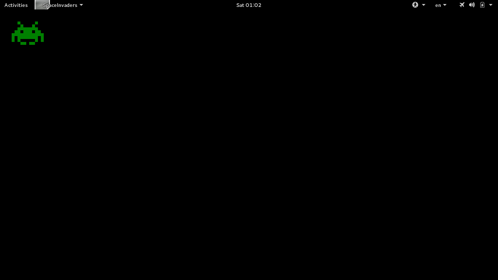
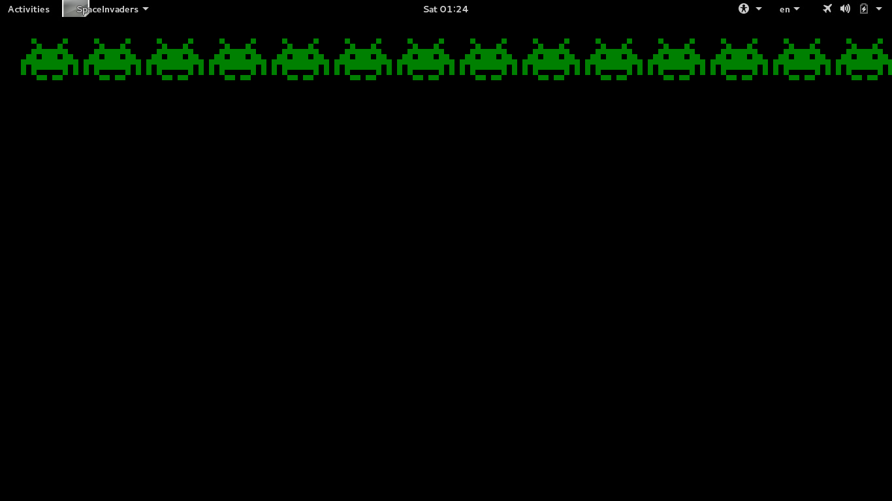

Comment penser comme un(e) programmeu[r|se] :
Pratiquer ! Le cours permet seulement de comprendre, pas d'apprendre. Il indique ce qu'il faut pratiquer.
D'une invasion spatiale (Space Invader™)


Programmation en Java.
On va parler en Java™, mais pas de Java.
public class SpaceInvaders extends LearningGraphics { public static void main(String[] args){ launch(args); } public void run(){ drawPixel(0, 0, "green"); } }
blabla blabla SpaceInvaders blabla blablabla b
blabla blabla blabla blabla b blalba bl blalba b
blabla blalbla
b
blabla b
drawPixel(0, 0, "green");
b
.b
On donne une instruction à l'ordinateur :
Dessine un pixel à la ligne 0 et à la colonne 0, de couleur verte.
(On commence souvent à numéroter à partir de 0 en informatique, comme pour les étages avec un rez-de-chaussée).
[Dessine un pixel] [à la ligne 0] et [à la colonne 0], [de couleur verte].
En langage naturelle, on peut tourner ses phrase de mille façons ("Belle marquise, vos beaux yeux …").
Lorqu'on écrit un programme, il faut respecter strictement ce à quoi "s'attend" l'ordinateur.
Attention au nombre, à la nature (au type) et à l'ordre des arguments.
Trouver les erreurs pour chaque ligne :
drawPixel(0, "green", 0); drawpixel(0, 0, "green"); drawPixel(0, 0, green); drawPixel(0., 0, green); drawPixel(0, 0, "green")
Comme en maths, ce sont les valeurs qui comptent (partout où l'on a "2" dans une expression mathématique, on pourrait écrire "1+1").
Comme dans les langues naturelles en fait, où l'on peut remplacer un nom par un groupe nominal en fait.
"La personne est en retard." → "La personne qui est entrée dans la pièce est en retard." → "La personne qui est entrée dans la pièce qui est au fond du couloir est en retard." → …
Dans un programme, on parle d' expressions (qui peut être composées de sous-expressions, qui peuvent elles-mêmes …)
drawPixel(0+0, (1+2)-(4-1), "gr"+"e"+"en");
On peut stocker une valeur dans une variable. On peut ensuite récupérer cette valeur en utilisant la variable comme une expression (qui vaut la dernière valeur stockée dans la variable).
int x= 0; int y= x; drawPixel(x, y, "green");
En java, chaque variable a un type fixé (nombre entier int, chaîne
de caractères String,…) indiqué à la déclaration. On ne peut
stocker que les valeurs de ce type dans la variable.
String color= "green"; // ceci est un commentaire int x="zéro"; // ne marche évidemment pas int y= "0"; // ne marche pas non plus drawPixel(x, y, color);
Un pixel ne se voit pas très bien.
drawPixel(0, 0, "green"); drawPixel(1, 0, "green"); drawPixel(2, 0, "green"); drawPixel(3, 0, "green"); drawPixel(4, 0, "green"); drawPixel(5, 0, "green"); drawPixel(6, 0, "green"); drawPixel(7, 0, "green");
On ne veut surtout pas se répéter quand on programme. Répéter des choses, c'est à l'ordinateur de le faire ! Mais comment faire si ce ne sont pas exactement les mêmes choses qui sont répétées ?
On "extrait" ce qui est identique : drawPixel( , 0, "green");, mais
on a besoin de garder un premier argument qui, lui, sera variable →
drawPixel(x, 0, "green").
Pour que le code soit compréhensible, il est essentiel de bien choisir le nom !
int x= 0; drawPixel(x, 0, "green"); x=1; // on ne redéclare pas x, on le réutilise drawPixel(x, 0, "green"); x=2; drawPixel(x, 0, "green"); x=3; drawPixel(x, 0, "green"); x=4; drawPixel(x, 0, "green"); x=5; drawPixel(x, 0, "green"); x=6; drawPixel(x, 0, "green"); x=7; drawPixel(x, 0, "green");
Vu comme ça, on a pas vraiment gagné au change ☹.
Les valeurs de x ne sont pas n'importe lesquelles en fait, à chaque
fois on fait la même chose : on passe à la valeur suivante.
int x= 0; drawPixel(x, 0, "green"); x= x+1; drawPixel(x, 0, "green"); x= x+1; drawPixel(x, 0, "green"); x= x+1; drawPixel(x, 0, "green"); x= x+1; drawPixel(x, 0, "green"); x= x+1; drawPixel(x, 0, "green"); x= x+1; drawPixel(x, 0, "green"); x= x+1; drawPixel(x, 0, "green");
On y est presque ! Maintenant on peut dire à l'ordinateur de répéter :
x= x+1;
drawPixel(x, 0, "green");
ou
drawPixel(x, 0, "green");
x= x+1;
On indique la condition d'arrêt bien sûr:
int x=0; do{ drawPixel(x, 0, "green"); x=x+1; }while(x <= 7);
En fait, ce type de code est tellement fréquent qu'il y a des façons plus concises de l'écrire. Par exemple :
for(int x=0; x <= 7; x= x+1){ drawPixel(x, 0, "green"); }
for(int x=0; x <= 7; x= x+1){ drawPixel(x, 0, "green"); } for(int x=0; x <= 7; x= x+1){ drawPixel(x, 1, "green"); } for(int x=0; x <= 7; x= x+1){ drawPixel(x, 2, "green"); } for(int x=0; x <= 7; x= x+1){ drawPixel(x, 3, "green"); } for(int x=0; x <= 7; x= x+1){ drawPixel(x, 4, "green"); } for(int x=0; x <= 7; x= x+1){ drawPixel(x, 5, "green"); } for(int x=0; x <= 7; x= x+1){ drawPixel(x, 6, "green"); } for(int x=0; x <= 7; x= x+1){ drawPixel(x, 7, "green"); }
int y= 0; for(int x=0; x <= 7; x= x+1){ drawPixel(x, y, "green"); } y= y+1; for(int x=0; x <= 7; x= x+1){ drawPixel(x, y, "green"); } y= y+1; for(int x=0; x <= 7; x= x+1){ drawPixel(x, y, "green"); } y= y+1; for(int x=0; x <= 7; x= x+1){ drawPixel(x, y, "green"); } y= y+1; for(int x=0; x <= 7; x= x+1){ drawPixel(x, y, "green"); } y= y+1; for(int x=0; x <= 7; x= x+1){ drawPixel(x, y, "green"); } y= y+1; for(int x=0; x <= 7; x= x+1){ drawPixel(x, y, "green"); } y= y+1; for(int x=0; x <= 7; x= x+1){ drawPixel(x, y, "green"); }
for(int y=0; y <= 7; y= y+1){ for(int x=0; x <= 7; x= x+1){ drawPixel(x, y, "green"); } }
À partir de la possibilité de dessiner un pixel, on a pu dessiner un
"bloc" de pixels. Ce qui rend drawPixel() utile, c'est qu'on peut
l'utiliser pour dessiner des pixels :
Parce que c'est une fonction.
for(int y=0; j <= 7; y= y+1){ for(int x=0; j <= 7; x= x+1){ drawPixel(x, y, "green"); } } for(int y=8; j <= 15; y= y+1){ for(int x=8; j <= 15; x= x+1){ drawPixel(x, y, "green"); } } for(int y=0; j <= 7; y= y+1){ for(int x=8; j <= 15; x= x+1){ drawPixel(x, y, "green"); } }
Dessin de n'importe quel carré :
for(int y= topLeftY; y < topLeftY+height; y= y+1){ for(int x= topLeftX; x < topLeftX+width; x= x+1){ drawPixel(x, y, color); } }
public void drawSquare(int topLeftX, int topLeftY , int width, int height , String color){ //... }
Le nom et l'ordre des arguments sont cohérents avec drawPixel().
Dessin de n'importe quel bloc d'un affichage "pixellisé" :
for(int y= row*BLOCK_SIZE; y < topLeft+ BLOCK_SIZE; y= y+1){ for(int x= col*BLOCK_SIZE; x < topLeft+ BLOCK_SIZE; x= x+1){ drawPixel(x, y, color); } }
public void drawBlock(int col, int row, String color){ //... }
Les deux.
public static void drawBlock(int col, int row, String color){ drawSquare(col*BLOCK_SIZE, row*BLOCK_SIZE , BLOCK_SIZE, BLOCK_SIZE, color); }
Un dessin, ce sera des blocs verts selon un motif en deux dimensions. On ne sait pas encore comment le faire, mais on sait qu'on peut le faire !

drawBlock(1, 3, "green"); drawBlock(2, 3, "green"); drawBlock(4, 3, "green"); drawBlock(5, 3, "green"); drawBlock(6, 3, "green"); drawBlock(8, 3, "green"); drawBlock(9, 3, "green");
On voudrait pouvoir stocker un ensemble de valeurs comme {1, 2, 4, 5,
6, 8, 9}. On peut utiliser pour cela un tableau, qui permet
d'accéder à différentes cases selon leur index.
int[] row3= {1, 2, 4, 5, 6, 8, 9}; drawBlock(row3[0], 3, "green"); drawBlock(row3[1], 3, "green"); drawBlock(row3[2], 3, "green"); drawBlock(row3[3], 3, "green"); drawBlock(row3[4], 3, "green"); drawBlock(row3[5], 3, "green"); drawBlock(row3[6], 3, "green");
int[] row3= {1, 2, 4, 5, 6, 8, 9}; for(int index=0; index < row3.length; index= index+1){ drawBlock(row3[index], 3, "green"); }
row3.length est le nombre de cases du tableau row3.
En fait, on voudrait pouvoir stocker un ensemble de tableaux comme
{{2,8},{3,7},{2,3,4,5,6,7,8},{1, 2, 4, 5, 6, 8, 9}...}.
On peut (évidemment !) utiliser pour cela un tableau (de tableaux !) :
int[][] spaceInvaderRows= {{2,8} ,{3,7} ,{2,3,4,5,6,7,8} ,{1, 2, 4, 5, 6, 8, 9} ,{0,1,2,3,4,5,6,7,8,9,10} ,{0,2,3,4,5,6,7,8,10} ,{0,2,8,10} ,{3,4,6,7}}; for(int r=0; r < spaceInvaderRows.length; r= r+1){ int[] row= spaceInvaderRows[r]; for(int index=0; index < row.length; index= index+1){ drawBlock(row[index], r, "green"); } }
En fait, on peut (évidemment !) utiliser (i.e. indexer) directement le tableau qui est dans une case d'un tableau :
for(int r=0; r < spaceInvaderRows.length; r= r+1){ for(int index=0; index < row.length; index= index+1){ drawBlock(spaceInvaderRows[r][index], r, "green"); } }
On a séparé la définition de l'image d'un alien (le sprite
spaceInvaderRows) de son affichage. D'ailleurs on fera mieux de
renommer spaceInvaderRows en spaceInvaderSprite car il vaut mieux
nommer en fonction de ce que ça fait plutôt que ce que c'est. En
effet, on pourrait changer la façon dont on représente le sprite
(e.g. bitmap). Pour l'instant un sprite ne peut être que d'une seule
couleur.
L'affichage est donc indépendant de l'image à représenter, on peut le réutiliser pour représenter le vaisseau du joueur, les missiles, etc. Chacun pourra avoir sa couleur propre. On voudra aussi bien évidemment pourvoir dessiner un sprite en n'importe quel point (pixellisé) de la fenêtre.
public void drawSprite(int col, int row, int[][] sprite, String color){ for(int r=0; r < sprite.length; r= r+1){ for(int index=0; index < sprite[r].length; index= index+1){ drawBlock(col+sprite[r][index], row+r, color); } } }
Si l'on peut dessiner un pixel/bloc/sprite, on peut en dessiner autant qu'on veut :
Puisque que l'on a implémenté cela de façon générique/réutilisable.
for(int c=0; c < (nbPixelsWidth/BLOCK_SIZE)-(ALIEN_WIDTH+1); c= c + (ALIEN_WIDTH+1)){ drawSprite(c, 0, spaceInvaderSprite, "green"); }

int nbLines= 4; for(int line=0; line < nbLines; line= line +1){ for(int c=0; c < (nbPixelsWidth/BLOCK_SIZE)-(ALIEN_WIDTH+1); c= c + (ALIEN_WIDTH+1)){ drawSprite(c, line*ALIEN_HEIGHT, spaceInvaderSprite, "green"); }
public class SpaceInvaders extends LearningGraphics { public static void main(String[] args){ launch(args); } public final static int BLOCK_SIZE= 8; public final static int ALIEN_WIDTH= 11; public final static int ALIEN_HEIGHT= 11; public void drawSquare(int topLeftX, int topLeftY , int width, int height , String color){ for(int y= topLeftY; y < topLeftY+height; y= y+1){ for(int x= topLeftX; x < topLeftX+width; x= x+1){ drawPixel(x, y, color); } } } public void drawBlock(int col, int row, String color){ drawSquare(col*BLOCK_SIZE, row*BLOCK_SIZE, BLOCK_SIZE, BLOCK_SIZE, color); } public void drawSprite(int col, int row, int[][] sprite, String color){ for(int r=0; r < sprite.length; r= r+1){ for(int index=0; index < sprite[r].length; index= index+1){ drawBlock(col+sprite[r][index], row+r, color); } } }
public void run(){ int[][] spaceInvaderSprite= {{2,8} ,{3,7} ,{2,3,4,5,6,7,8} ,{1, 2, 4, 5, 6, 8, 9} ,{0,1,2,3,4,5,6,7,8,9,10} ,{0,2,3,4,5,6,7,8,10} ,{0,2,8,10} ,{3,4,6,7}}; int nbLines= 4; for(int line=0; line < nbLines; line= line +1){ for(int c=0; c < (nbPixelsWidth/BLOCK_SIZE) -(ALIEN_WIDTH+1) ; c= c + (ALIEN_WIDTH+1)){ drawSprite(c, line*ALIEN_HEIGHT, spaceInvaderSprite, "green"); } } } }